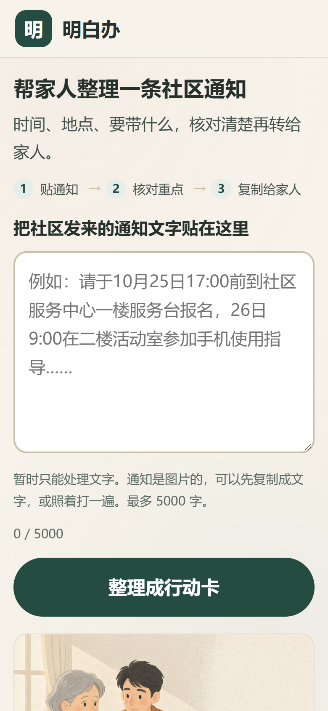
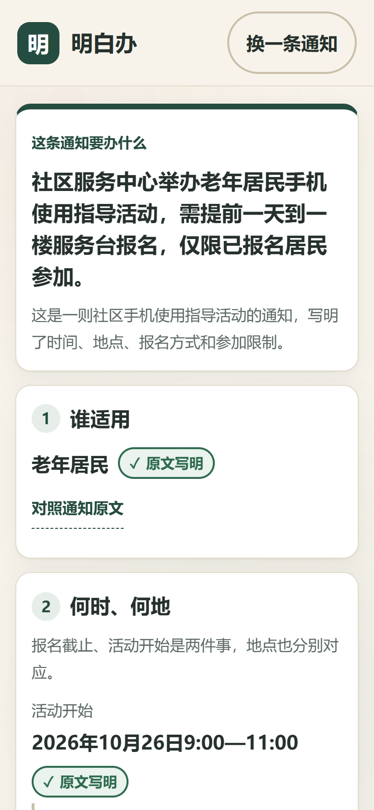
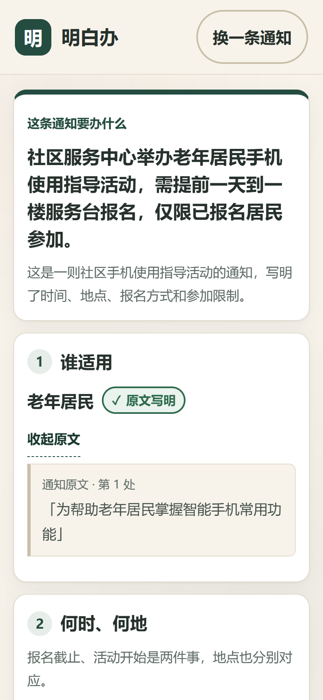
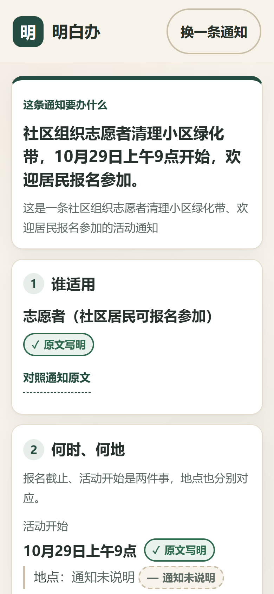
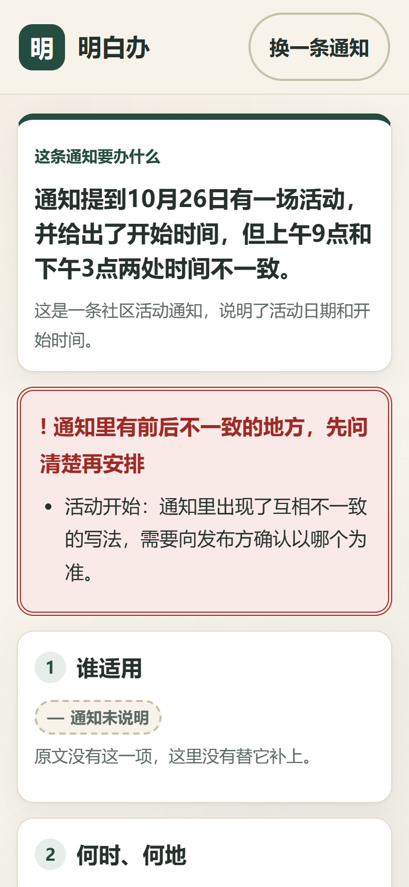
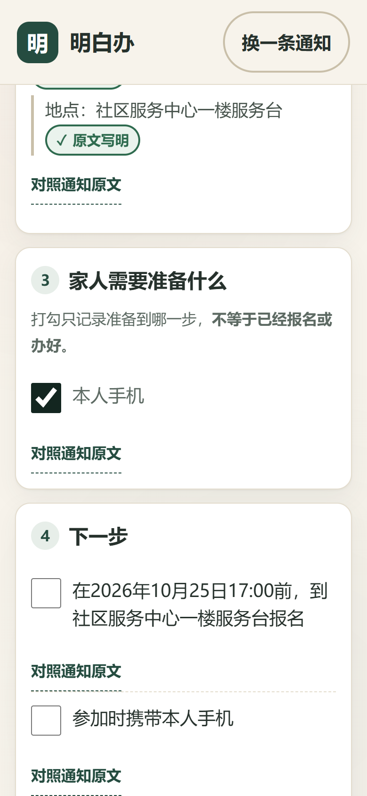
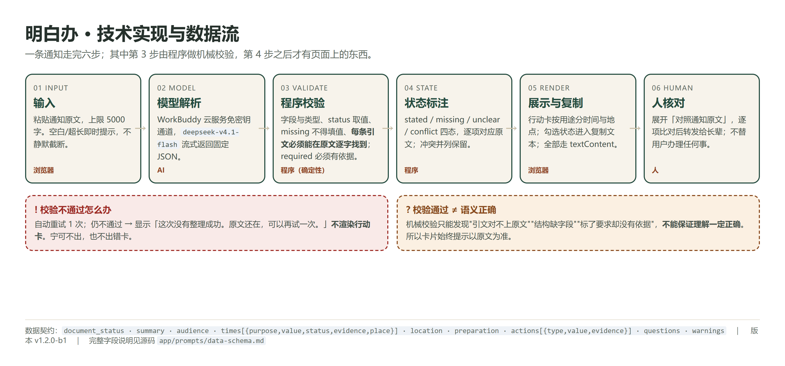

2026 iCAN 大学生创新创业大赛 · 快手 AI 未来创造者挑战赛 | AI 产品实现
明白办
给家人一张明白卡
把社区通知整理成家人看得懂的行动卡：时间分用途、地点不混淆、每一项都能对照原文。
 情境插画为 AI 生成，人物为虚构角色，不代表真实个人。
情境插画为 AI 生成，人物为虚构角色，不代表真实个人。
| 产品名称 | 明白办（Mingbai Ban） |
| 版本 | v1.2.0-b2（候选提交版） |
| 在线体验 | mingbaiban-42482.app.workbuddy.host |
| 运行时模型 | deepseek-v4.1-flash（平台托管通道） |
本说明书所述功能均为该版本已实现并可复现的功能；用户的真实使用效果尚未验证，第 8 节如实说明。
01 产品概述
一件具体的小事，为什么需要整理
下面这条通知，是很多社区最常见的写法（本项目编写的演示样例，不是真实社区公告）：
各位居民：为帮助老年居民掌握智能手机常用功能，社区服务中心将开展“手机使用指导”活动。
时间：2026年10月26日9:00—11:00 地点：社区服务中心二楼活动室
报名方式：请于2026年10月25日17:00前到社区服务中心一楼服务台报名，名额有限。
说明：本次活动仅限已报名居民参加，请携带本人手机。
八十几个字里有四组关键信息，而且互相“长得像”：
| 容易读错的地方 | 为什么 |
|---|
| 两个时间 | 25 日 17:00 是报名截止，26 日 9:00 是活动开始。错当成“25 日去参加”，就白跑一趟。 |
| 两处地点 | 报名在一楼服务台，活动在二楼活动室。合并成一个“社区服务中心”，到了还得再问。 |
| 一个限制 | “仅限已报名居民参加”决定了要不要提前跑一趟；漏掉这句，当天可能进不去。 |
| 一份材料 | 只写了“本人手机”。实际准备时，人容易顺手再带身份证、医保卡——通知并没有要求。 |
明白办做的事：把这条通知整理成一张卡——先说这条通知要办什么，再把两个时间、两处地点、限制条件、要带的东西分条列出，每一条都能点开看到通知里的原句；通知没写的，就写“通知未说明”，不替它补。
目标用户：主要操作人是家人或社区志愿者，受益者是长辈。长辈不必自己复制粘贴长段文字；但卡片写得中性、可独立阅读，长辈拿到就能自己看明白，去不去、怎么办仍由本人决定。
03 核心功能
四项功能，都在真实界面里
| 编号 | 功能 | 实现要点 |
|---|
| F1 | 通知输入 | 粘贴文字，上限 5000 字；空白与超长都有明确提示且不静默截断；三条虚构演示样例一键填入 |
| F2 | 事实整理 | 一句话说清“要办什么”，再按 谁适用 / 何时何地 / 准备什么 / 下一步 / 还要确认 分条 |
| F3 | 原文核对 | 每个事实项标注四态之一，可展开“对照通知原文”；时间与地点分别挂载，报名地点与活动地点不合并 |
| F4 | 准备与复制 | 准备清单可勾选；一键复制整张卡，复制文本按当前勾选输出 [x]/[ ]，并声明“不是报名凭证” |

① 首页：贴通知 → 整理成行动卡

② 结论先行，冲突提醒紧随其后

③ 每一项都能对照通知原文
界面上的两处关键设计：①冲突或含糊时，结论卡下方立刻出现确认横幅（红框双线 + “!”），不折到页面底部；②“准备什么”与“下一步”分开两节，勾选只记准备状态，不写“已报名”。
04 应用场景示例
同一条通知，原文与行动卡逐项对照
| 通知原文 | 行动卡怎么显示 | 关键点 |
|---|
| 请于 2026 年 10 月 25 日 17:00 前到社区服务中心一楼服务台报名 | 报名截止：2026 年 10 月 25 日 17:00 前（原文写明）
地点：社区服务中心一楼服务台（原文写明） | 时间与它自己的地点绑在一起 |
| 时间：2026 年 10 月 26 日 9:00—11:00 地点：社区服务中心二楼活动室 | 活动开始：2026 年 10 月 26 日 9:00—11:00（原文写明）
地点：社区服务中心二楼活动室（原文写明） | 不与报名地点混成一个 |
| 本次活动仅限已报名居民参加 | 谁适用：已报名的居民（原文写明） | 限制条件不被删掉 |
| 请携带本人手机 | 准备什么：本人手机（原文写明） | 不加身份证、不加医保卡 |
| （原文没有写集合点/联系方式等） | 显示“通知未说明”，并在“还要确认什么”列出可问的问题 | 缺就是缺，不补齐 |

缺信息：标“通知未说明”

冲突：顶部先提醒确认

准备：打勾≠已报名
以上均为线上版本真实返回与真实界面截图，未做内容修改。示例通知为本项目编写的虚构演示材料。
05 AI 的角色与价值
模型负责理解，程序负责核对，人负责决定
| 环节 | 谁做 | 边界 |
|---|
| 读懂通知 | 大语言模型：处理口语、简称、模糊表述、长句套长句 | 模型不判断资格、不做医疗法律建议 |
| 拆出事实 | 模型：按固定 JSON 输出对象、时间（含用途与地点）、准备、下一步、待确认 | 必须给逐字原文摘录 |
| 机械校验 | 程序：字段类型、status 取值、missing 不得填值、每条引文必须能在原文中逐字找到、required 必须有依据 | 校验不过 → 重试 1 次 → 仍不过则不出卡 |
| 判断去不去 | 人：家人核对、长辈决定 | 产品不代办、不报名 |
为什么这一步不能只靠提示词
提示词能约束模型“不要编”，但无法证明它没编。所以产品在模型之后加了一层可判定的检查：把模型给出的每条引文拿去原文里找，找不到就判失败。这层检查是机械的、每次都一样，不依赖模型这次是否听话。
必须说清的限制：引文能在原文找到，不等于理解一定正确。程序只能发现“引文对不上”“结构不完整”“标了要求却没有依据”，发现不了“引文真实但把意思读反了”。所以结果页始终提示以通知原文和社区说法为准，产品里没有任何“绝不出错”“保证不编造”的字样。
运行时的模型服务（如实记录）
| 项目 | 实际情况 |
|---|
| 接入方式 | WorkBuddy 云服务托管的免密钥大模型通道；浏览器直连数据面，服务端按 Origin 校验，前端不保存长期密钥 |
| 实际模型 | deepseek-v4.1-flash，由模型列表接口读取后选用；页脚显示本次实际使用的模型名 |
| 参数 | 流式输出、temperature 0.1、单次超时 45 秒、失败最多重试 1 次（网络瞬断也重试 1 次） |
| 无法确认 | 上游提供方的机房与部署形态由平台托管，本项目无法核实，故不作声明 |
06 技术实现思路
六步链路，只有一处外部依赖

图 2 技术实现与数据流（可编辑源：sources/flow-tech.html）
技术选型
- 前端：原生 HTML/CSS/JS，无框架、无构建步骤
- 模型接入：WorkBuddy 云服务 SDK（浏览器 CDN 版）
- 校验：自研 validate.js（结构与引文回溯）
- 托管：静态站点，单端口 HTTP 服务
关键实现
- 提示词只存一份，运行时读取
prompts/system-prompt.txt
- 请求序号丢弃过期响应；加载中禁用按钮
- 全部文本走
textContent，不拼 innerHTML
- 剪贴板三级降级，最后给手动全选框
输出契约（节选）
document_status · summary · audience · times[{purpose,value,status,evidence,place}] · location · preparation · actions[{type,value,evidence}] · questions · warnings
status 仅取 stated / missing / unclear / conflict；missing 时 value 必须为 null、evidence 必须为空。required 必须有能回溯到原文的引文，否则整张卡不出。
07 验证情况与限制
做过的测试，和还没做到的事
本版本（v1.2.0-b2）实测
| 项目 | 结果 | 说明 |
|---|
| 12 条通知用例 | 12 / 12 通过 | 8 条正常 + 4 条边界（缺地点、无发布日期的相对时间、时间冲突、非通知） |
| 页面行为与异常路径 10 项 | 10 / 10 通过 | 空白、超长、注入、重复提交、过期响应、复制降级、HTML 注入渲染、窄屏、触控尺寸、服务不可用 |
| A 轮专项 11 项 | 11 / 11 通过 | required 无依据拒绝、复制与勾选一致、地点分离、冲突置顶、非通知提示、语气检查 |
| 布局与可访问性 | 通过 | 360/390/768/1280 无横向滚动；触控区 ≥56px；9 组配色 ≥4.5:1 |
| 视频 | 119.7 秒 | 1080×1920、H.264、AAC 音轨；真实录屏占主要时长 |
测试环境：Windows 11 + Edge（无头），视口 390×844；对象为线上版本，走真实模型调用。原始记录见交付包 assets/evidence/。通过这 12 条只说明在当前测试集上符合预期，不代表任何输入都不会出错。
还没做到的
- 未开展目标用户试用。没有长辈或志愿者使用本版本的记录，因此不提供任何效果、满意度、节省时间的数据。
- 未做真机测试。四档视口都是桌面浏览器模拟，不是真实手机。
- 只能处理文字。长辈收到的大多是截图或语音通知，这是当前最大的使用门槛——已列入下一步。
- 相对时间不换算。“明天”“周五”原样保留并提示确认，这类通知仍需用户自己对日历。
- 校验有盲区。引文真实但理解错误的，机械检查发现不了。
- 依赖网络与服务配额。不可用时页面明确报错，不给假答案。
08 应用价值与下一步
从一张卡开始，先做小范围验证
它现在能解决什么
| 场景 | 产品做的事 |
|---|
| 家人替长辈读通知 | 先整理成卡，核对原文后转发；避免口头转述时漏掉楼层、截止时间、限制条件 |
| 社区志愿者协助登记 | 批量面对写法各异的通知时，快速得到统一格式的事实清单，缺口一眼看出 |
| 长辈自己复查 | 卡片可独立阅读，能反复看“要带什么”“几点在哪”，不必再打电话问 |
下一步怎么验证（不承诺结果）
- 配对试用：3—5 组“家人 + 长辈”，用两条难度相近的通知，一条直接读、一条用产品看，交叉顺序；记录找到正确时间地点的比例、是否需要协助、卡住的位置。模板见 15_用户试用材料。
- 社区侧小范围：请 1—2 位社区工作者用自己的通知试整理，看“未说明/冲突”提示是否帮到他们。
- 真机测试：在长辈实际使用的手机上验证字号、触控与微信内置浏览器打开。
- 输入形式：先做截图识别（OCR），再做卡片朗读——两项目前都只是计划，产品里还没有入口。
商业化与合作：目前没有任何商业合作、政府采购或社区落地。可能的路径（社区养老服务、社会组织工具）都只是待验证设想，不作为既成事实。